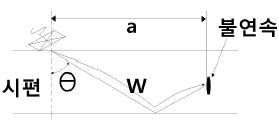
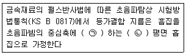
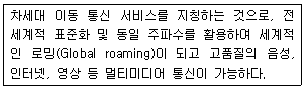
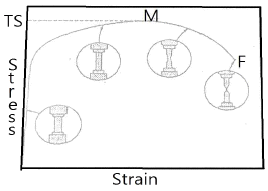
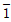

초음파비파괴검사기사(구) (2009-07-26 기출문제)
1과목: 초음파탐상시험원리
1. 초음파탐상시험에 사용되는 접촉매질의 적용이나 특성을 설명한 것으로 틀린 것은?
- 시험편과 표면 사이의 공기를 제거할 수 있어야 한다.
- 접촉매질의 막은 가능한 한 얇은 것을 선택하여야 한다.
- 시험체의 음향임피던스와 차이가 큰 것을 사용하여야 한다.
- 쉽게 제거되고 쉽게 적용할 수 있어야 한다.
(정답률: 알수없음)

2. 수침법에서 초음파가 입사각 12.3° 알루미늄에 전달되었다면 알루미늄 내에 존재하는 음파의 종류는? (단, 각 매질 내에 존재하는 음파의 속도는 다음과 같다. 물(종파) : 1.5 x 105 cm/s, 알루미늄(종파) : 6.3 x 105 cm/s, 알루미늄(횡파) : 3.1 x 105cm/s)
- 종파만 존재한다.
- 횡파만 존재한다.
- 표면파만 존재한다.
- 종파, 횡파 모두 존재한다.
(정답률: 알수없음)
3. 그림에서 불연속의 위치를 결정하고자 알파 = WsinΘ 의 공식을 이용할 때 다음 중 필요하지 않은 인자는?

- 입사점
- 굴절각
- 빔행정거리
- 시험편의 두께
(정답률: 알수없음)
4. 동일한 재료를 동일한 주파수로 검사할 때 일반적으로 횡파가 종파보다 작은 불연속에 감도가 좋은 이유는?
- 횡파는 시험체내에서 쉽게 분산되지 않으므로
- 횡파의 입자진동방향이 불연속에 더 민감하므로
- 횡파의 파장이 종파의 파장보다 더 짧으므로
- 횡파의 파장이 종파의 파장보다 2배 길기 때문에
(정답률: 알수없음)
5. 초음파의 지향각은 매체를 통과하는 초음파의 파장과 진동자의 크기에 따른 함수로써 다음 설명 중 옳은 것은?
- 주파수가 증가하고, 진동자의 크기가 감소하면 지향각은 항상 작아진다.
- 주파수가 증가하고, 진동자의 크기가 감소하면 지향각은 항상 커진다.
- 주파수와 진동자의 크기가 모두 감소하면 지향각은 작아진다.
- 주파수와 진동자의 크기가 모두 감소하면 지향각은 커진다.
(정답률: 알수없음)
6. 두께 25mm 의 강용접부를 굴절각 70° 로 탐상하였더니 결함깊이가 14mm 이었다면 탐촉자에서 결함까지의 거리는 약 몇 mm 인가?
- 38.5mm
- 40.9mm
- 45.2mm
- 48.6mm
(정답률: 알수없음)
7. 자분탐상시험과 비교할 때 침투탐상시험을 우선적으로 적용할 수 있는 가장 큰 이유는?
- 시험체의 재질에 대한 제한이 적기 때문에
- 미세한 균열의 검출감도가 우수하기 때문에
- 열처리 직후의 검사에서 신뢰성이 높기 때문에
- 표면 전처리 정도가 높지 않아도 되기 때문에
(정답률: 알수없음)
8. 시험체의 양쪽에 접근이 가능해야 적용할 수 있는 비파괴 검사법은?
- 방사선투과시험
- 초음파탐상시험
- 자분탐상시험
- 와전류탐상시험
(정답률: 알수없음)
9. 다음 중 결함의 형상을 육안으로 판단할 수 있어 해석이 용이한 비파괴검사법만으로 조합된 것은?
- 방사선투과검사, 자분탐상검사
- 초음파탐상검사, 침투탐상검사
- 와전류탐상검사, 자분탐상검사
- 와전류탐상검사, 침투탐상검사
(정답률: 알수없음)
10. 다음 방사선 투과시험의 장점에 대한 설명 중 틀린 것은?
- 검사결과는 반영구적으로 기록 및 보관할 수 있다.
- 마이크로 기공 또는 마이크로 터짐의 결함 검출능력이 뛰어나다.
- 대부분의 재질에 적용할 수 있으며, 특히 내부결함 검출이 용이하다.
- 주변 재질과 비교하여 1% 이상의 방사선 흡수차를 나타내는 결함을 검출할 수 있다.
(정답률: 알수없음)
11. 다음 중 침투탐상시험과 비교하여 자분탐상시험의 장점으로 옳은 것은?
- 절연체인 재료도 탐상할 수 있다.
- 비철금속 재료도 탐상할 수 있다.
- 페인트 처리된 강 재료도 탐상할 수 있다.
- 표면이 복잡한 형상의 시험체도 쉽게 탐상할 수 있다.
(정답률: 알수없음)
12. 다음 중 다른 누설검사와 비교하였을 때 기포누설검사의 가장 큰 장점은?
- 누설위치의 판별이 매우 빠르다.
- 누설량을 정량적으로 측정할 수 있다.
- 시험체 표면의 온도에 크게 영향을 받지 않는다.
- 시험용액의 점도(Viscosity)에 영향을 받지 않는다.
(정답률: 알수없음)
13. 다음 중 압력변화측정시험에서 시험결과가 의심스러울 때 시험 데이터의 신뢰도를 증가시키기 위해 가장 효율적으로 조치할 수 있는 첫 단계 방법으로 옳은 것은?
- 시험기간을 연장한다.
- 시험을 중단하고 장치를 교정한다.
- 시험을 중단하고 정확도가 높은 시험장치로 교체한다.
- 모든 시험조건과 시험장치를 교정한 다음 재시험을 실시 한다.
(정답률: 알수없음)
14. 각종 비파괴검사 장치의 교정에 대한 설명 중 옳은 것은?
- 극간(York)법에의한 자분탐상장치는 시험 전, 후 인상력(Lifting power)을 확인하여야 한다.
- 감마선투과시험에 사용하는 선원의 크기는 시험 전, 후 꺼내서 직접 확인 및 교정하여야 한다.
- 초음파탐상장치의 빔 폭의 측정은 3개월마다 또는 3개월 미만의 경우 연속 사용 기간마다 교정하여야 한다.
- 침투탐상용 탐상제는 시험 전에 매번 성능 교정을 받아야 하며 검정기관의 인증을 실시 하여야 한다.
(정답률: 알수없음)
15. 보수검사를 와전류 탐상시험으로 실시한 경우를 설명한 것중 옳은 것은?
- 전열관이나 열교환기 배관 등은 프로브 코일로 검사하고, 항공기 부품 표면은 관통코일로 검사했다.
- 열교환기나 복수기 등의 검사에 관과 구멍의 안쪽에 내삽코일에 넣어 탐상했다.
- 열교환기 배관의 검사에서 배관 속에 프로브 코일을 넣어 관의 결함과 두께 감소를 검사했다.
- 원자력발전설비 대형 전열관의 검사에서 방사선피폭이 많기 때문에 관통코일 장치를 이용하여 자동화 검사를 했다.
(정답률: 알수없음)
16. 외경 30mm, 두께 2.5mm 의 튜브를 직경 20mm 인 코일이 감겨있는 내삽형 탐촉자로 와전류 탐상시험할 대 충전율(Fill Factor)은 얼마인가?
- 0.44
- 0.64
- 0.67
- 0.80
(정답률: 알수없음)
17. 다음 중 와전류탐상시험을 할 수 없는 시험체는?
- 강선
- 황동판
- 알루미늄판
- 베크라이트 환봉
(정답률: 알수없음)
18. 다음 중 자속밀도에 대한 설명으로 옳은 것은?
- 단위 면적 S 에 ø개의 자속 인 S/ø 로 나타낸다.
- 자계의 세기 H를 투자율 μ로 나누어준 H/μ를 말한다.
- SI 단위로는 T(Tesla)를 MKS 단위로는 Wb/m2 로 나타낸다.
- 비자성체인 재료의 경우 자속밀도는 약 2000H/m 정도 이다.
(정답률: 알수없음)
19. 다음 중 철판에서 자주 발견되는 라미네이션(Lamination) 결함의 검출에 가장 효과적인 비파괴검사법은?
- 자분탐상검사
- 방사선투과검사
- 초음파탐상검사
- 와전류탐상검사
(정답률: 알수없음)
20. 다른 침투탐상검사와 비교하여 수세성 형광침투탐상시험의 특징이 아닌 것은?
- 표면조도가 6s 이하의 매끄러운 표면을 갖는 시험체에 적용한다.
- Key 또는 나사부와 같은 형상이 복잡한 시험체를 탐상할 수 있다.
- 넓은 면적의 시험체를 한번의 조작으로 탐상할 수 있다.
- 고감도의 수세성 형광침투액을 사용하면 얕고 미세한 결함도 탐상이 가능하다.
(정답률: 알수없음)
2과목: 초음파탐상검사
21. 탐촉자의 진동자 크기보다 작은, 같은 크기의 기공과 융합불량이 거리가 같은 곳에 있다면 일반적으로 스크린상의 에코높이는 어떠한가? (단, 음파는 결함에 수직방향으로 입사된다.)
- 기공의 에코가 융합불량의 에코보다 높다.
- 융합불량의 에코가 기공의 에코보다 높다.
- 기공 에코와 융합불량 에코가 똑같이 나타난다.
- 융합불량 에코는 나타나지만 기공 에코는 나타나지 않는다.
(정답률: 알수없음)
22. DGS선도에 관한 다음 설명 중 올바른 것은?
- DGS선도에 의해 결함 크기를 평가할 때 감쇠가 큰 경우에는 보정을 필요로한다.
- DGS선도에 의해 결함 크기를 평가할 때 결함이 경사져 있는 경우 결함 크기를 실제보다 크게 측정하는 것이된다.
- DGS선도에 의해 결함을 평가할 때 고분해능 탐촉자를 사용하면 결함치수를 더 정확하게 측정하는 것이 가능하다.
- DGS선도를 이용하여 결함의 종류를 추정할 수 있다.
(정답률: 알수없음)
23. 다음 중 크리핑파(creeping wave)에 대한 설명으로 옳은 것은?
- 크리핑파의 전파속도는 횡파 속도와 유사하다.
- 크리핑파는 표면을 따라서 전파하는 종파의 일종이다.
- 크리핑파는 전파하면서 도중에 레일리 표면파로 변환된다.
- 크리핑파는 표면을 따라서 전파하기 때문에 비교적 먼거리까지 전파한다.
(정답률: 알수없음)
24. 경사각탐상시 용접 덧붙임을 제거한 상태에서 용접부의 가로터짐(횡균열) 등의 결함을 검출하기 위하여 탐촉자를 용접부 및 열 영향부 위에 놓고 초음파 빔을 용접선 방향으로 돌려 용접선 방향으로 이동시키는 주사법은?
- 용접선상주사
- 탠덤주사
- 진자주사
- 목돌림주사
(정답률: 알수없음)
25. 초음파탐상방법에 대한 설명 중 틀린 것은?
- CRT횡축상의 에코위치로부터 그 반사면의 위치를 추정하는 것이 가능하다.
- CRT상의 결함 에코높이로부터 결함의 크기를 추정 할 수있다.
- 펄스를 사용하기 때문에 반사체의 형상을 잘 알 수 있다.
- 수직탐상에서는 라미네이션은 잘 검출되지만 블로홀은 잘 검출되지 않는다.
(정답률: 알수없음)
26. 초음파 진동자로 현재 압전재료인 PZT를 많이 사용한다. PZT에서의 종파 속도가 약 4000m/s라 할 때 5MHz의 종파를 발생시키려면 그 두께를 얼마로 하여야 하는가?
- 0.2mm
- 0.4mm
- 0.6mm
- 0.9mm
(정답률: 알수없음)
27. 경사각 탐촉자의 굴절각은 강재 표준시험편에서의 굴절각으로 표시한다. 만일 강재가 아닌 알루미늄과 황동에 이러한 경사각 탐촉자를 사용하는 경우에는 그 굴절각은 어떻게 되는가? (단, 각 재료의 종파속도 크기는 알루미늄 ＞ 강 ＞ 황동, 횡파속도의 크기는 강 ＞ 알루미늄 ＞ 황동 순 이다.)
- 알루미늄과 황동에서 모두 강재보다 더 작은 굴절각을 갖는다.
- 알루미늄과 황동에서 모두 강재보다 더 큰 굴절각을 갖는다.
- 알루미늄에서는 굴절각이 커지고 황동에서는 굴절각이 작아진다.
- 알루미늄에서는 굴절각이 작아지고 황동에서는 굴절각이 커진다.
(정답률: 알수없음)
28. 다음 중 종파의 진행속도가 가장 빠른 물질은?
- 강(Steal)
- 티타늄(Titanium)
- 텅스텐(Tungsten)
- 알루미늄(Aluminum)
(정답률: 알수없음)
29. 원거리 음장에서 거리가 증가함에 따라 지시의 강도가 감소하는 주 원인이 아닌 것은?
- 회절
- 산란
- 흡수
- 분산
(정답률: 알수없음)
30. STB-A3 시험편의 사용 목적에 해당되지 않는 것은?
- 입사점의 측정
- 굴절각의 측정
- 측정 범위의 조정
- Φ4x4mm 구멍으로 분해능 측정
(정답률: 알수없음)
31. 다음 중 용접부의 검사에서 경사평행주사 또는 용접선상 주사를 하여 최대 에코높이가 나타날 결함은?
- 횡균열
- 슬래그 개재
- 내부의 용입부족 결함
- 개선면의 융합불량 결함
(정답률: 알수없음)
32. 재질이 다른 동일 두께의 판재 두장을 각각 수직탐상하였다. 전자는 저면 에코의 반사 회수가 매우 많은데 비해 후자는 몇 회 정도만 보였다. 후자와 같은 재료는 다음 중 어느 것에 해당되는가?
- 감쇠가 큰 재료이다.
- 결정입자가 미세한 재료이다.
- 전자는 주강품이고, 후자는 단강품이다.
- 전자는 결함이 존재하나 후자는 결함이 존재하지 않는다.
(정답률: 알수없음)
33. 수침법에서는 탐촉자와 시험편 전면까지의 거리를 조정해 주어야 하는데 이는 수중을 통과하는 초음파의 전달시간이 어떻게 되도록 하기 위한 조치인가?
- 시험편을 통과하는 초음파의 전달시간이 같아지도록 하기위한 조치
- 시험편을 통과하는 초음파의 전달시간보다 커지도록 하기위한 조치
- 시험편을 통과하는 초음파의 전달시간보다 작아지도록 하기위한 조치
- 시험편을 통과하는 초음파의 전달시간이 기하급수적으로 커지도록 하기 위한 조치
(정답률: 알수없음)
34. 음극선과(CRT)상에 전기적인 지시가 발생하였다. 잡음의 원인을 바로 잡기 위하여 우선 취해야 할 조치는?
- 잡음지시는 전원플러그에 의한 것이 확실하므로 플러그를 다른 것으로 바꾼다.
- 잡음지시는 전원플러그의 오물 때문이므로 먼저 깨끗이 청소하여 사용한다.
- 잡음지시가 장비에 의한 것인지 시험편에 의한 것인지 먼저 확인한다.
- 잡음지사가 전원회로상의 문제이기 때문에 다른 전원회로에 연결 사용한다.
(정답률: 알수없음)
35. 접촉법에 의한 초음파탐상검사시 합성수지로 된 쐐기를 부착할 때의 장점이 아닌 것은?
- 감도를 증가시킨다.
- 진동자의 마모를 방지한다.
- 곡면에도 쉽게 접촉되도록 한다.
- 입사 각도를 바꿀 수 있도록 한다.
(정답률: 알수없음)
36. 일반적으로 초음파탐상검사에서 횡파(shear wave)를 이용하여 효과적으로 검사하는 대상은?
- 박판의 두께 측정
- 용접부의 결함검출
- 금속재료의 탄성율 측정
- 후판내부의 적층결함 검출
(정답률: 알수없음)
37. 다음 중 초음파 탐상기의 수신기(receiver)를 구성하는 요소가 아닌 것은?
- 증폭기
- 정류기
- 감쇠기
- 시간축 발생기
(정답률: 알수없음)
38. 초음파탐상검사에서 에코높이가 불연속의 면적에 비례하여 변화하는 것을 나타내는 탐상기의 성능은?
- 분해능
- 증폭 직선성
- 최대 투과능
- 시간축 직선성
(정답률: 알수없음)
39. 일반적인 경사각 탐촉자에서 발생한 초음파는 시험체내에서 어떤 파의 형태로 전파되는지 가장 옳은 것은?
- 종파
- 수직횡파
- 판
- 수평횡파
(정답률: 알수없음)
40. 초음파탐상검사에서 석출된 결정 입계의 탄화물은 초음파의 산란감쇠를 증가시킨다. 그러나 일반적으로 탄화물층의 크기가 파장의 약 얼마 이하가 되면 탐상에 큰 영향을 주지 않는가?
- 1/2
- 1/4
- 1/10
- 1/100
(정답률: 알수없음)
3과목: 초음파탐상관련규격및컴퓨터활용
41. 보일러 및 압력용기에 대한 대형 단강품의 초음파탐상시험(ASME Sec. V, Art.23 SA-388)에서 오스테나이트 스테인리스강 단강품을 검사할 수 있는 장비의 주파수 규정으로 옳은 것은?
- 0.4MHz 이하에서 검사할 수 있어야 한다.
- 1MHz 이하에서 검사할 수 있어야 한다.
- 2.25MHz 이상에서 검사할 수 있어야 한다.
- 5MHz 이상에서 검사할 수 있어야 한다.
(정답률: 알수없음)
42. 보일러 및 압력용기에 대한 초음파탐상검사(ASME Sec. V, Art.4)에 따라 용접부 탐상검사에 경사각 탐촉자를 사용할 때 다음 중 일반적으로 이용되는 경사각이 아닌 것은?
- 30°
- 45°
- 60°
- 70°
(정답률: 알수없음)
43. 보일러 및 압력용기에 대한 초음파탐상검사(ASME Sec. V, Art.4)에 따른 기록 지시에서 불합격 지시는 최소한 다음의 것들이 기록되어야 한다. 이와 관련이 먼 것은?
- 지시의 종류
- 지시의 위치
- 지시의 시간
- 지시의 크기
(정답률: 알수없음)
44. 보일러 및 압력용기에 대한 용접부의 초음파탐상시험(ASME Sec.V, Art.4)에서 검사표면 곡률 직경이 20인치를 초과하는 용접부의 대비시험편에 관한 설명이 옳은 것은?
- 동일한 곡률을 갖는 시험편이나 평평한 보정시험편으로 사용한다.
- 동일한 곡률을 갖는 시험편이나 용접부의 0.9 ∼ 1.5배의 곡률을 갖는 시험편을 사용한다.
- 동일한 곡률을 갖는 시험편이나 0.94 ∼ 20인치까지의 표면곡률을 갖는 시험편을 사용한다.
- 평평한 보정시헌편으로 보정한 후 곡률직경이 7.2 ∼ 12인치인 시험편으로 재보정하여 사용한다.
(정답률: 알수없음)
45. 보일러 및 압력용기에 대한 용접부의 초음파 탐상시험(ASME Sec.V, Art.4)에서 규정한 초음파탐상기기의 주파수 범위로 옳은 것은?
- 0.1 ∼ 0.5MHz
- 0.5 ∼ 1MHz
- 1 ∼ 5MHz
- 5 ∼ 20MHz
(정답률: 알수없음)
46. 비파괴검사 - 초음파탐상검사 - 탐촉자의 음장 특성(KS BISO 10375)에 따라 진동자 유효 치수가 10 x 10mm, 주파수 5MHz 인 각형 수직탐촉자의 강(V = 5.92km/s)에서의 펄스의 근거리 음장 거리는 약 몇 mm 인가?
- 14.3
- 21.2
- 28.6
- 84.8
(정답률: 알수없음)
47. 보일러 및 압력용기의 용접부에 대한 초음파탐상검사(ASME Sec.V, Art.4)에 따른 수동탐상시험 주사 속도는 특별한 규정이 없는 경우 최고 약 몇 mm/s 로 제한하고 있는가?
- 150
- 300
- 475
- 600
(정답률: 알수없음)
48. 초음파 탐상시험용 표준시험편(KS B 0831)에서 경사각탐촉자의 굴절각 측정에 이용되는 것은?
- STB-N1
- STB-A2
- STB-G V3
- STB-A31
(정답률: 알수없음)
49. 보일러 및 압력용기에 대한 초음파탐상검사(ASME Sec. V, Art.4)에 따른 용접부 탐상에서 탐상에 필요한 절차서의 필수 변수에 들어가지 않는 것은?
- 주사방향
- 접촉매질의 종류
- 시험될 용접부의 형상
- 탐촉자의 형식, 주파수
(정답률: 알수없음)
50. 금속재료의 펄스반사법에 따른 초음파탐상 시험방법 통칙(KS B 0817)에는 탐상도형의 기본기호를 규정하고 있다. 다음 중 기호와 설명이 틀리게 연결된 것은?
- T : 송신펄스
- S : 표면에코
- B : 흠집에코
- W : 측면에코
(정답률: 알수없음)
51. 보일러 및 압력용기에 대한 재료의 초음파탐상검사(ASME Sec.V, Art.5)에 따라 탐상장치의 스크린 높이 직선성 및 증폭 직선성을 검사해야 하는 최대 점검 주기로 올은 것은?(단, 아날로그 장비이며, 연속적으로 사용하지 않은 경우이다.)
- 8시간
- 30일
- 3개월
- 6개월
(정답률: 알수없음)
52. 다음 중 ( )안에 알맞은 용어는?

- ㉠ 평행 ㉡ 장방형
- ㉠ 평행 ㉡ 원형
- ㉠ 직교 ㉡ 원형
- ㉠ 직교 나은 장방형
(정답률: 알수없음)
53. 강 용접부의 초음파탐상 시험방법(KS B 0896)에 따라 10시간 작업을 할 때 입사점, STB 굴절각, 탐상굴절각 등은 최소한 몇 번 이상 조정 및 확인하여야 하는가?
- 1번
- 2번
- 3번
- 10번
(정답률: 알수없음)
54. 압력용기용 강판의 초음파탐상 검사방법(KS D 0233)에서 수직법에 의한 펄스반사법으로 탐상하고자 할 때 단일진동자 수직탐촉자로 검사할 대상이 아닌 강판 두께는?
- 10mm
- 20mm
- 30mm
- 60mm
(정답률: 알수없음)
55. 보일러 및 압력용기의 용접부에 대한 초음파탐상시험(ASME Sec.V, Art.4)에 따라 거리진폭 특성곡선(DAC Curve)을 작성하여 정밀탐상을 실시하던 중 결함지시의 최대 신호 진폭을 알기 위해 기준 감도에서 15dB를 감소시켰더니 DAC곡선에 결함신호가 일치하였다. 이 결함지시의 최대 신호 진폭은 약 얼마인가?
- 275% DAC
- 652% DAC
- 631% DAC
- 778% DAC
(정답률: 알수없음)
56. 주기억장치와 중앙처리장치의 처리 속도를 맞추기 위하여 사용하는 것은?
- 가상기억장치
- 캐시기억장치
- 다운기억장치
- 보조기억장치
(정답률: 알수없음)
57. 정보보호 기술 중 시스템의 안전성과 신뢰성을 확보하기 위한 기술로 전자서명이 있다. 다음 중 전자서명기술에 대한 설명으로 옳은 것은?
- 전자 서명 기술은 대칭키 암호 시스템(PKI)을 기본 암호 구조로 사용하고 있다.
- PKI는 전자 상거래에서만 사용될 뿐 전자 우편, FTP, Telnet에서는 사용할 수 없다.
- PKI는 인증서의 발급, 사용 및 취소에 관련된 서비스를 제공하는데, 특히 등록기관(RA)은 사용자가 공개키 인증서와 CRL을 저장하고 열람할 수 있는 전자 레포지토리를 제공한다.
- PKI 서비스 중 인증기관(CA)은 사용자에게 인증서를 발급하거나 취소하는 서비스를 제공한다.
(정답률: 알수없음)
58. 다음이 설명하고 있는 것은?

- 셀룰러(cellular)방식
- IMT-2000
- ISDN
- 주파수 분할 다중 접속(FDMA)
(정답률: 알수없음)
59. 운영체제의 제어프로그램 중 다양한 종류의 데이터 포맷과 파일을 체계적으로 관리해 주는 프로그램은?
- 감시 프로그램
- 작업관리 프로그램
- 문제처리 프로그램
- 데이터관리 프로그램
(정답률: 알수없음)
60. 다음 중 정보를 검색하는 엔진에 속하지 않는 것은?
- 라이코스
- 네이버
- 엠파스
- 네스케이프
(정답률: 알수없음)
4과목: 금속재료학
61. 다음 중 금속의 조직량을 측정하는 방법이 아닌 것은?
- 면적 측정법
- 직선 측정법
- 점 측정법
- 절단 측정법
(정답률: 알수없음)
62. C와 Si의 함량에 의하여 주철을 분류한 조직도를 무엇이라 하는가?
- Cupola 조직도
- Bessemer 조직도
- Huntsman 조직도
- Maurer 조직도
(정답률: 알수없음)
63. 다음 중 냉간가공된 금속에 대한 설명으로 틀린 것은?
- 냉간가공으로 금속결정 내의 전위는 감소한다.
- 융점이 낮은 금속에서는 가공 후 가열하지 않고 실온에 방치만하여도 회복이 일어난다.
- 냉간가공된 금속을 어닐링하면 회복, 재결정, 결정립성장의 단계를 거친다.
- 냉간가공으로 변형된 금속을 가열하면 그 내부에 새로운 결정립의 핵이 생기고 이것이 성장하여 변형이 없는 결정립으로 치환되는 과정을 재결정이라고 한다.
(정답률: 알수없음)
64. 탄소강 중에 망간(Mn)의 영향으로 옳은 것은?
- 고온에서 결정립 성장을 돕는다.
- 강의 담금질 효과를 감소시켜 경화능이 저하된다.
- 강의 점성을 증가시키고 고온 가능성은 향상시키나 냉간가공성에는 불리하다.
- 강의 연신율을 증대시키고 강도, 경도, 인성을 감소시킨다.
(정답률: 알수없음)
65. 섬유재로 모재금속을 강화시킨 섬유강화형 복합재료(FRM)의 특징으로 옳은 것은?
- 비강도, 비강성이 높다.
- 열적안정성이 낮다.
- 2차 성형성, 접합성이 없다.
- 섬유축방향과 직각방향의 강도가 작다.
(정답률: 알수없음)
66. Mg합금 중 엘렉트론 합금에 대한 설명으로 옳은 것은?
- 가공용 마그네슘합금으로 Mg-Al 합금에 Ni과 As을 첨가한 합금이다.
- 가공용 마그네슘합금으로 Mg-Zn-Cu 합금에 B을 첨가한 합금이다.
- 주조용 마그네슘합금으로 Mg-Al 합금에 소량의 Zn과 Mn을 첨가한 합금이다.
- 주조용 마그네슘합금으로 Mg-Zr-Cu 합금에 Sn을 첨가한 합금이다.
(정답률: 알수없음)
67. 금속초미립자의 특성에 대한 설명으로 옳은 것은?
- 융점이 금속덩어리보다 높다.
- 활성이 약하여 화학반응을 일으키지 않는다.
- Fe계 합금 초미립자는 금속덩어리보다 자성이 약하다.
- 저온에서 열저항이 매우 작아 열의 양도체이다.
(정답률: 알수없음)
68. 금속의 방식법 중에서 알루미늄을 확산시켜 피막을 형성시키는 것은?
- 크로마이징
- 칼로라이징
- 파커라이징
- 세라다이징
(정답률: 알수없음)
69. 금속간 화합물에 대한 설명으로 틀린 것은?
- 일반적으로 AmBn 의 화학식으로 나타낸다.
- 고온에서 불안정하여 화학적으로 분해되기 쉽다.
- 변형이 어렵고 경하며, 일반적으로 복잡한 결정구조를 갖는다.
- A, B 두 금속이 간단한 원자비로 결합되어 본래의 물질과 같은 성질을 나타낸다.
(정답률: 알수없음)
70. 탄소강에서 담금질시 화학조성 중 마텐자이트로 변태를 시작하는 온도 (MS)에 가장 크게 영향을 미치는 것은?
- Mn
- Si
- C
- Cu
(정답률: 알수없음)
71. 표준 인장시편에 표점거리를 표시한 다음 신장계를 사용하지 않고 인장시험을 하여 다음과 같은 인장곡선을 얻었을 때 이 곡선으로부터 구할 수 없는 것은?

- 항복강도
- 인장강도
- 연신율
- 충격값
(정답률: 알수없음)
72. 다음 원소 중에서 응고할 때 수축하지 않고 오히려 팽창하는 원소는?
- Bi
- Sn
- Al
- Cu
(정답률: 알수없음)
73. 다음 중 Ni-Fe 합금에 대한 설명으로 틀린 것은?
- 10% Ni-Fe 합금을 Hydronalium 이라 하며, 연신성이 우수하고 비중이 작아 선박용 부품 등에 사용된다.
- 36% Ni-Fe 합금을 Invar 라고 하며, 상온부근에서 열팽창계수가 작다.
- 41~48% Ni-Fe 합금을 Platinite 라 하며, 전자관, 전구 등에 사용된다.
- 78.5% Ni-Fe 합금을 Petmalloy 라 하며, 우수한 고투자율성을 나타내어 자기헤드용으로 사용된다.
(정답률: 알수없음)
74. 다음 중 청동계 합금에 대한 설명으로 옳은 것은?
- 합금 상태도 상에 α, β, γ, δ, η, ε 의 상이 존재한다.
- 주석의 최대고용한도는 520°C에서 약 5%이다.
- 주석청동은 결정편석이 거의 없다.
- 768°C에서 포정반응에 의해 면심입방정이 생성된다.
(정답률: 알수없음)
75. 다이캐스팅용 Al합금의 첨가원소 중 용탕의 유동성 및 보급성을 좋게 하고 열간 취성을 감소시키는 원소는?
- S
- Cr
- Fe
- Si
(정답률: 알수없음)
76. 면심입방격자의 슬립계 조합이 잘못된 것은?
- (111)[

01] - (111)[10
 ]
] - (111)[101]
- (111)[
 01]
01]
(정답률: 알수없음)
77. 알파-황동을 냉간 가공하여 재결정 온도 이하의 낮은 온도로 풀림을 하면 가공 상태보다 더욱 경도가 증가되는 현상은?
- 경년 변화
- 석출 변화
- 고온 탈아연
- 저온 풀림 경화
(정답률: 알수없음)
78. 0.2% 탄소강이 공석 변태 후 펄라이트 중의 페라이트 양은 약 몇 % 인가?(단, 알파의 고용량은 0.025, 공석점은 0.80 이다.)
- 20
- 50
- 70
- 90
(정답률: 알수없음)
79. 다공질 금속의 원리적인 제조방법에 대한 설명으로 틀린 것은?
- 금속분말이나 단섬유를 소결하는 분말야금 방법
- 용탕금속 중에 발포제를 직접 첨가해서 발포시키는 방법
- 중력 상태에서 용융금속 내의 가스를 뽑아내는 방법
- 발포재료 등과 같이 밀도가 작은 재료를 금속과 복합화 시키는 방법
(정답률: 알수없음)
80. 다음 중 구조용강 및 기계구조용강에 대한 설명으로 틀린 것은?
- 쾌삭강이란 S, Ca, Pb 등을 첨가하여 쾌삭성을 향상시킨 강종이다.
- Cr-Mo 강은 Cr 강보다 담금질성이 향상되고 뜨임취성이 적은 강이다.
- 고망간강은 열전도성이 좋으며, 팽창계수도 작아 열변형을 일으키지 않는다.
- 보론강은 중탄소강에 보론을 0.003% 이하 첨가하면 경화능이 현저하게 향상된다.
(정답률: 알수없음)
5과목: 용접일반
81. 특수용접으로 미세한 알루미늄 분말과 산화철의 혼합물을 도가니에 넣고 그 위에 과산화바륨, 마그네슘 등의 혼합분말로 점화하면 강력한 발열반응으로 차축, 레일 등 맞대기용접으로 알맞은 것은?
- 테르밋 용접
- 전자 빔 용접
- 레이저 용접
- 일렉트로 슬래그 용접
(정답률: 알수없음)
82. 정격 2차전류가 300A인 교류아크 용접기에서 실제의 용접전류 200A로 4시간 동안 용접하였을 때의 용접기 허용 사용율은 얼마인가? (단, 정격사용율은 40% 이다.)
- 60%
- 75%
- 90%
- 110%
(정답률: 알수없음)
83. 가스용접에서 주철 용접시 용제로 가장 적합한 것은?
- 불화소다, 염화리튬
- 규산소다, 염화나트륨
- 불화소다, 규산소다
- 붕산, 붕사
(정답률: 알수없음)
84. 용접 홈을 가공하고, 완전히 용입시키기 위하여 루트간격을 적당히 둔 연강판을 맞대기 용접을 할 때, 발생하는 회전 변형을 방지하는 대책으로 틀린 것은?
- 가접을 튼튼히 한다.
- 미리 수축을 예측하여 예측량만큼 벌려 놓는다.
- 길이가 긴 경우에는 2명 이상 용접사가 이음의 길이를 정해놓고 순차적으로 교대 용접한다.
- 후퇴법, 대칭법, 비석법(Skip method) 등의 용착법을 이용한다.
(정답률: 알수없음)
85. 교류 아크 용접기의 수하특성 설명으로 올바른 것은?
- 아크 전압이 낮아지면 용접전류가 감소한다.
- 아크 전압이 높아지면 용접전류가 증가한다.
- 용접전류가 증가하면 아크 전압이 낮아진다.
- 아크 전압이 낮아지면 전류는 흐르지 않는다.
(정답률: 알수없음)
86. 용접시 피닝의 목적을 올바르게 설명한 것은?
- 슬랙을 제거하고 용접부의 강도를 높인다.
- 소성변형을 주어 용접부의인장 잔류 응력을 완화시킨다.
- 소성가공에 의한 용접부의 경도를 증가시킨다.
- 가공경화에 따른 용접부의 인성을 증가시킨다.
(정답률: 알수없음)
87. 피복 금속 아크 용접봉의 용융속도에 관한 설명으로 맞는 것은?
- 용융속도는 아크 전류에 반비례한다.
- 용융속도는 아크 전류에 비례한다.
- 용융속도는 아크 전압에 반비례한다.
- 용융속도는 아크 전압에 비례한다.
(정답률: 알수없음)
88. 아크 용접법 중 2개의 텅스텐 전극봉 사이에서 아크를 발생하는 아크열을 이용하여 용접하는 것은?
- 테르밋 용접
- 불활성 가스 금속 아크 용접
- 탄산가스 아크 용접
- 원자 수소 아크 용접
(정답률: 알수없음)
89. 용접의 장·단점 설명으로 틀린 것은?
- 재료의 두께에 제한이 없다.
- 잔류 응력은 발생하나 재질의 변형은 없다.
- 기밀성, 수밀성, 유밀성이 우수하여 이음 효율이 높다.
- 소음이 적어 실내 작업에 지장이 적고 복잡한 구조물 제작이 쉽다.
(정답률: 알수없음)
90. 아크용접에서 피복 아크 용접봉을 사용하는 이유로 가장 적합한 것은?
- 용접 전압을 떨어뜨린다.
- 용착 금속의 성질을 양호하게 한다.
- 소비 전력을 적게 한다.
- 용접기의 수명을 길게 한다.
(정답률: 알수없음)
91. 용접기의 무부하전압 100V, 아크 전압이 40V, 아크전류가 300A 이고, 내부손실이 5kW이면 용접기의 효율과 역율은 약 얼마인가?
- 효율 70.6%, 역율 56.7%
- 효율 56.7%, 역율 70.6%
- 효율 53%, 역율 58.5%
- 효율 58.5%, 역율 53%
(정답률: 알수없음)
92. 맞대기 용접을 할 때 모재의 영향을 방지하기 위하여 흠 표면에 다른 종류의 금속을 표면 피복 용접하는 것을 의미하는 용접용어는?
- 버터링
- 심 용접
- 앤드 탭
- 덧살
(정답률: 알수없음)
93. 용해 아세틸렌 취급시 주의사항으로 틀린 것은?
- 용기 저장시에는 반드시 세워두지 말고 눕힐 것
- 보관시 용기는 40°C 이하를 유지하고 반드시 캡을 씌울 것
- 저장 장소는 통풍이 양호할 것
- 사용 후에는 반드시 약간의 잔압(0.1kgf /cm2)를 남겨둘 것
(정답률: 알수없음)
94. 피복 배합제의 성질 중 탈산제로 사용하지 않는 것은?
- 탄산철
- 망간철
- 규소철
- 티탄철
(정답률: 알수없음)
95. 서브머지드 아크용접(잠호 용접)의 설명으로 틀린 것은?
- 아크 전압이 낮아지면 아크 길이가 길어지고 비드 폭이 넓어진다.
- 용접속도가 지나치게 빠르면 언더컷이 생겨 비드면이 거칠어진다.
- 전류를 크게 증가 시키면 와이어의 용융량과 용입이 크게 증가한다.
- 와이어 돌출길이를 길게 하면와이어의 저항열이 많이 발생하여 와이어의 용융량이 증가한다.
(정답률: 알수없음)
96. 용해 아세틸렌을 충전하였을 때 용기 전체의 무게가 62.5kgf 이었는데, 다 쓰고 난 후 빈 용기에 달아 보았더니 58.5kgf 였다. 다 소비한 아세틸렌가스의 양은 몇 리터 인가?
- 3580
- 3600
- 3620
- 3800
(정답률: 알수없음)
97. 직류 아크 용접기를 사용하여 용접할 경우 용접봉을 음극(-)에, 모재를 양극(+)에 연결하는 극성은?
- 음극성
- 정극성
- 역극성
- 쌍극성
(정답률: 알수없음)
98. 용접시 발생하는 변형을 방지하기 위한 대책으로 틀린 것은?
- 가접을 튼튼하게 하고 역변형을 준다.
- 맞대기 용접보다 필릿용접 이음을 먼저 용접한다.
- 지그를 활용하여 구속 용접을 한다.
- 비석법 등 적당한 용착법을 활용한다.
(정답률: 알수없음)
99. 서브머지드 아크용접의 용제에 대한 설명으로 틀린 것은?
- 용제의 종류는 일반적으로 용융형 용제와 소결형 용제로 구분한다.
- 용제의 입도 표시에서 20×D는 20 메시(mesh)에서 아주 미세한 분말을 뜻한다.
- 용접이 끝나면 용융되지 않은 용제는 회수하여 새로운 용제를 보충하여 다시 사용하되 중요하지 않은 곳에 사용한다.
- 용제의 산포량은 가능한 한 많이 사용하는 것이 실드 효과가 좋아 결함을 방지할 수 있다.
(정답률: 알수없음)
100. 인청동 모재의 TIG 용접에 관한 설명으로 틀린 것은?
- 직류 정극성을 주로 사용한다.
- 토륨 텅스텐 용접봉을 사용한다.
- 용접속도를 느리게 해야 한다.
- 보호가스로 아르곤 또는 아르곤 + 헬륨을 사용한다.
(정답률: 알수없음)